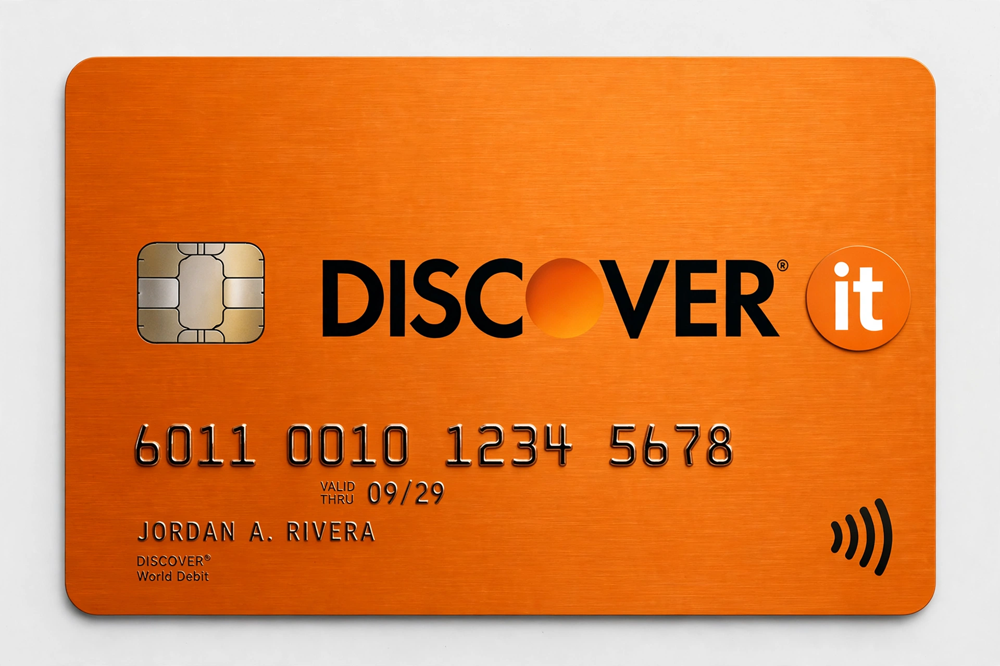

The Discover Card is an American credit card brand issued primarily by Discover Financial Services. Introduced by retailer Sears in 1985, Discover was notable at launch for offering cashback rewards and no annual fee, challenging Visa and Mastercard. When first introduced, Discover cards offered a 'Cashback Bonus' on purchases.

Sears launched Discover through its Dean Witter financial unit. Discover Financial was spun off from Morgan Stanley in 2007. The Discover network historically had lower merchant acceptance than Visa/Mastercard but lower interchange fees in some segments, and expanded via the Pulse debit network and Diners Club International acquisition in 2008.
In February 2024 Capital One announced an agreement to acquire Discover Financial Services for about $35.3 billion in stock; the deal closed in May 2025 after regulatory approval, creating one of the largest U.S. credit card issuers and giving Capital One its own card network.